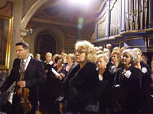
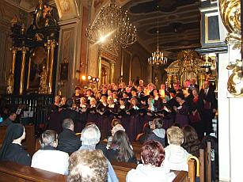

do aktualności
do aktualności2012-10-16
16.30 zbieramy się w kościele na próbie „ruchowej”.
Jest nas bardzo dużo, gdyż występuje kilka chórów i zespołów. Trzeba to wszystko „ogarnąć” na podstawie opracowanego scenariusza. Kto do góry, kto na dół i kiedy. No i żeby co najważniejsze nikt nie spadł i wszyscy pięknie śpiewali. Udało się to wszystko opanować i zorganizować.
Koniec próby, chwila odpoczynku.
Ale tylko chwila, bo teraz musimy zrobić sobie sami krótką rozśpiewkę i próbę przed koncertem.
Już wszystko gotowe. Camerata wraca do kościoła na mszę. Wchodzimy na chór, gdyż śpiewamy podczas mszy wspólnie z chórem Jana Pawła II ze Strumian. Dyryguje Izabela Szota, na skrzypcach gra dyrygent chóru w Strumianach Piotr Piwko.

Po mszy schodzimy cichutko do kościoła i czekamy na rozpoczęcie koncertu.
Godzina 19.00 – zaczynamy.

Na początek wręczenie stypendiów im. Jana Pawła II młodzieży szkolnej.
A teraz rozpoczyna się koncert przeplatany recytacją młodzieży i słowami Jana Pawła II.
Gromkie brawa na koniec od słuchaczy i zakończyliśmy występ.
do aktualności